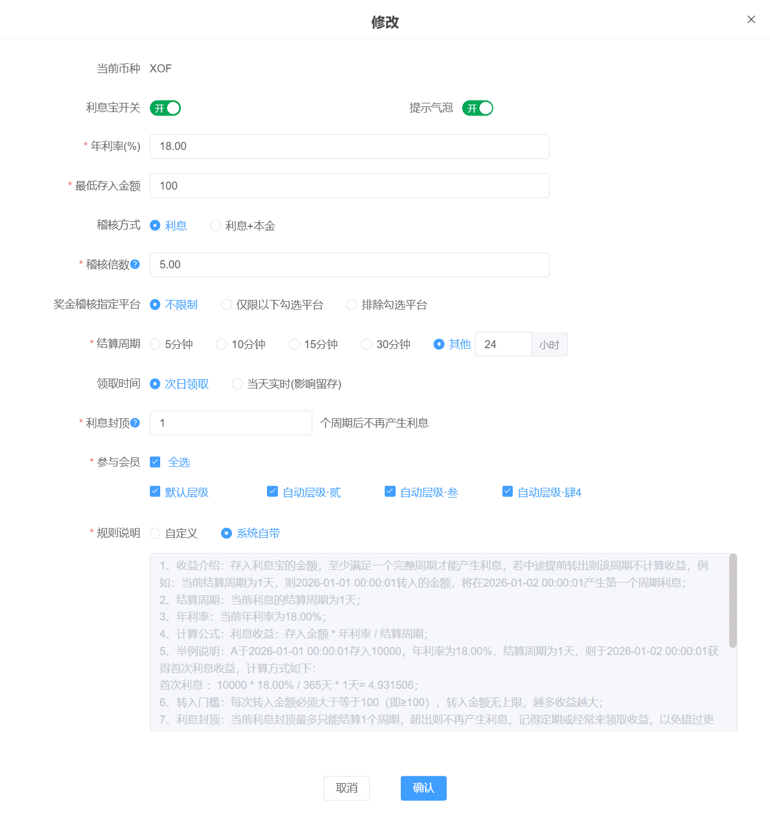
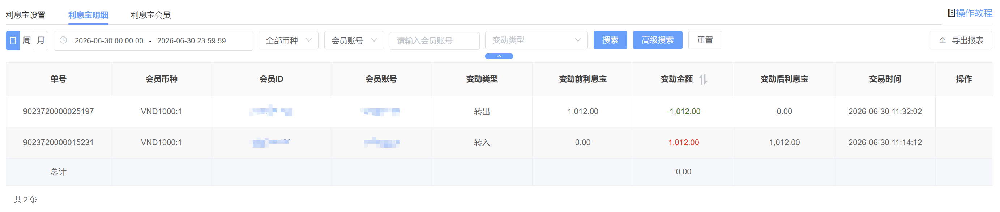
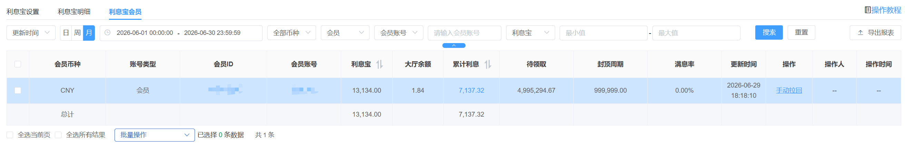
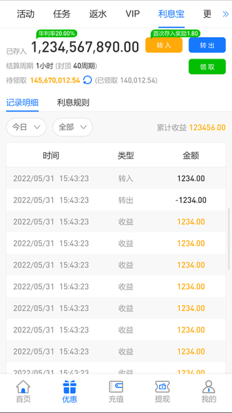

利息宝 · 操作与运营教程
会员把余额存入利息宝按年利率分周期产生利息，用收益把资金留在平台、推动定期回访领取。
一、功能概述
| 玩法 | 会员把大厅余额存入利息宝，按年利率分结算周期持续产生利息，可领取后转出。 |
| 解决什么 | 用利息把闲置资金留在平台、减少提现；高利率吸引存入，利息封顶推动定期回访领取。 |
| 前提 | 利息宝开关开启后客户端才展示；需先按币种设置年利率、结算周期、最低存入、稽核倍数等。 |
| 功能位置 | 后台：优惠 → 利息宝。客户端：默认展示在【优惠】里，会员从优惠进入利息宝详情页。 |
二、利息宝设置
在利息宝设置页对某币种行点【修改】打开弹窗，如下图。多品牌站点的配置是统一的，不能给各品牌单独设参数，只能通过【品牌名称(ID)】勾选控制对哪些品牌开启或关闭。
 |
| 序号 | 字段 | 必填 | 说明 |
|---|---|---|---|
| 1 | 利息宝开关 | 是 | 关闭后客户端不展示利息宝。 |
| 2 | 提示气泡 | 否 | 控制客户端利息相关提示气泡的展示。 |
| 3 | 年利率(%) | 是 | 年化利率，最高可设六个九（999999.99）；越高收益越大、成本也越高。 |
| 4 | 最低存入金额 | 是 | 会员单次转入需达到该门槛，转入无上限。 |
| 5 | 稽核方式 | 是 | 利息 / 利息+本金；决定提现时稽核的范围。 |
| 6 | 稽核倍数 | 是 | 领取的利息需完成该倍数有效投注才能提现。 |
| 7 | 奖金稽核指定平台 | 否 | 不限制／仅限以下勾选／排除勾选，限定稽核打码来源。 |
| 8 | 结算周期 | 是 | 5分钟／10分钟／15分钟／30分钟／其他(1-24 小时)；每满一个完整周期结算一次利息。 |
| 9 | 领取时间 | 是 | 次日领取 或 当天实时；当天实时会影响留存（可随时领走转出），次日领取留存更好。 |
| 10 | 利息封顶 | 是 | 最多结算 N 个周期，超出不再产生利息，需领取后继续。 |
| 11 | 参与会员 | 是 | 按站点公共参与层级勾选。 |
| 12 | 规则说明 | 是 | 系统自带或自定义。 |
三、利息算法与规则
利息按年利率分摊到每个结算周期计算。
| 计算公式 | 利息收益 = 存入金额 × 年利率 ÷ 结算周期数。即年利率先除 365 天、24 小时、60 分钟得每分钟利率，再乘结算周期分钟数。 |
| 结算条件 | 每满一个完整结算周期产生一次利息；中途提前转出，当前未满的周期不计收益。 |
| 转入门槛 | 每次转入需达最低存入金额，无上限，存越多收益越多。 |
| 利息封顶 | 最多计息设定的周期数，达到封顶后不再产生利息。 |
| 稽核方式 | 分两种：【利息】只对领取的利息稽核（利息×稽核倍数），转入转出本金不稽核；【利息+本金】每次结算利息时把当前本金算进去，转出利息 X 时需打满（本金+X）×稽核倍数才能提现，即每次领取都带当前本金的稽核。 |
| 最低领取 | 利息累计需 ≥0.01 客户端才展示待领取；不足 0.01 暂不可领，从最后转入时间重新计算。 |
| 结算时机 | 利息在会员转入、转出、手动拉回时结算并计入待领取（永不过期）；会员进入详情页看到的是当前实时计算的利息。 |
| 领取 | 实时领取直接进大厅余额；次日领取则次日才可手动领取（今日产生的部分当天不可领）。利息通过【领取与审核】由后台手动派发，金额较大时需走大额审核（状态【大额待申请】）。 |
以下示例统一配置：年利率 100%、结算周期 5 分钟、次日领取、稽核 1 倍（封顶在对应场景单独说明）。
| 场景 | 计算与结果 |
|---|---|
| 基础计算（单周期） | 会员存入 10000，满 1 个周期（5 分钟）产生利息 = 10000 × 100% ÷ 365 ÷ 24 ÷ 60 × 5 ≈ 0.095。 |
| 多周期累计 | 会员存入 10000 放满 15 分钟（3 个完整周期），利息 ≈ 0.095 × 3 = 0.285，按完整周期持续累计。 |
| 未满周期转出 | 会员存入 10000、存 9 分钟后转出：只结算 1 个完整周期（5 分钟）≈ 0.095，剩余 4 分钟不计；转出后从 0 重新计时。 |
| 利息封顶 | 若封顶设为 3 周期，会员存入 10000 最多累计 3 个周期 ≈ 0.285，达到封顶后不再产生利息。 |
| 最低领取门槛 | 会员只存入 1000，1 个周期利息 ≈ 0.0095，不足 0.01 暂不可领，累计到 ≥0.01 才可领。 |
| 稽核方式·利息 | 领取利息 0.095 时，只需完成 0.095 × 1 的有效投注即可提现（只稽核利息）。 |
| 稽核方式·利息+本金 | 领取利息 0.095 时，需完成（10000+0.095）×1 = 10000.095 的有效投注才可提现（连本金一起稽核）；若存入后未产生利息随即转出，则无需稽核。 |
四、明细与会员
4.1 利息宝明细
记录每次结算与存取的变动流水，变动类型分转入、转出、领取收益、手动拉回，含变动前后利息宝金额与交易时间，可按时间、币种、账号、变动类型筛选并导出。变动金额按类型用不同颜色区分：拉回黑色、转出绿色、领取收益黄色、转入红色。
 |
4.2 利息宝会员
记录所有转入过利息宝的会员，含当前存入额、大厅余额、累计利息、待领取、封顶周期、满息率等，可按金额区间等筛选并导出。待领取与满息率进入页面实时计算，满息率＝待领取÷封顶×100%（保留 2 位小数）。更新时间为利息宝余额或收益变更的时间，操作时间为后台操作时间、未操作显示横杠；操作栏仅在利息宝余额大于 0 时才显示【手动拉回】。
【手动拉回】二次确认后把会员利息宝余额转回大厅余额、自动结算利息并放待领取表；底部【批量拉回】会自动剔除利息宝余额为 0 的会员。
 |
五、玩家端效果
利息宝默认展示在【优惠】里，会员从这里进入；运营也可按需在其他位置额外配置入口。
会员进入利息宝详情页后，可看到已存入金额、年利率、结算周期（含封顶周期数）、待领取与已领取金额，以及【转入】【转出】【领取】按钮。会员从大厅余额转入，按周期产生利息，可领取收益、随时转出。
详情页提供【利息规则】与【记录明细】两个页，记录明细可查看历次转入、转出、领取收益等变动；待领取金额旁有刷新按钮，可实时查看当前利息。开启【提示气泡】后，详情页顶部会展示当前年利率。
 |
六、运营建议
| 维度 | 建议 | 提示 |
|---|---|---|
| 年利率 | 用偏高的名义年利率吸引存入，配合利息封顶控制实际成本。 | 年利率与封顶周期搭配设计，避免无封顶导致成本失控。 |
| 结算周期 | 周期越短到账越快、体感越好；想降频繁结算压力可拉长周期。 | 短周期提升存入意愿，但服务端结算压力更大。 |
| 领取时间 | 重留存选次日领取；重活跃体感选当天实时（注意会被随时领走转出）。 | 当天实时影响留存，需权衡。 |
| 利息封顶 | 用封顶周期推动会员定期回访领取，制造回访习惯。 | 封顶过低会员频繁打扰，过高失去促活意义。 |
| 稽核倍数 | 对领取的利息设稽核倍数，避免领息即提；本金不稽核保证存取自由。 | 倍数过高会打击存入意愿。 |
| 效果监控 | 看利息宝会员的存入总额、累计利息、参与人数与拉回情况评估留存效果。 | 存入额持续走低需回看利率与封顶设置。 |
七、常见问题
Q：会员提前转出会怎样？
A：会员转出时才结算利息，且只结算已满的完整周期，不满一个周期不计利息。例如结算周期 5 分钟，存入 9 分钟后转出，只结算 1 个完整周期（5 分钟）的利息，剩余 4 分钟不计；转出后重新从 0 开始计时。
Q：利息封顶后还会继续产生利息吗？
A：达到封顶周期后暂停产生利息，会员领取收益后才会继续结算，所以需提醒会员定期领取。
Q：手动拉回会损失利息吗？
A：不会。手动拉回会把利息宝金额转回大厅余额，并自动结算已产生的利息。